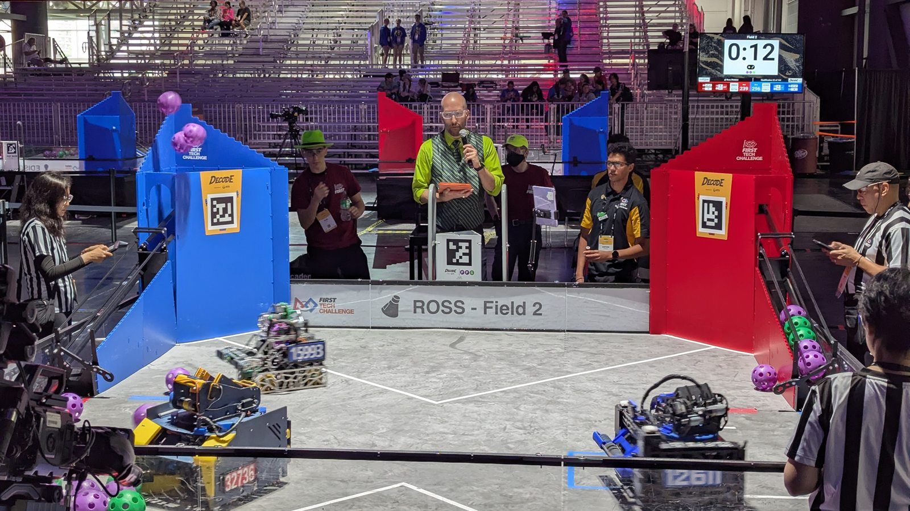

01 / INTERNACIONALFIRST · FTC / FRC
Robótica de competición internacional
Mecánica · autonomía · pit crew
Tres temporadas diseñando, fabricando y programando robots para FTC y FRC. Chasis, intakes, elevadores, control autónomo con sensores y reparaciones de pit con el reloj en contra.
C++JavaCADPIDSensoresTelemetría